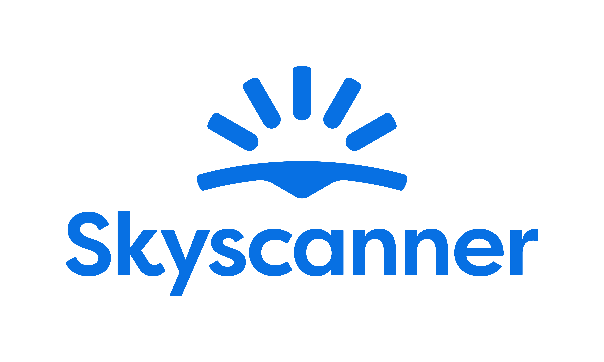

Source Accessibility provides invaluable accessibility consultantancy to Skyscanner, supporting us primarily with inclusive user testing. Her technical background and genuine passion for accessibility makes a real impact on how we design and build for disabled users.

Heather Hepburn
Head of Accessibility, Skyscanner